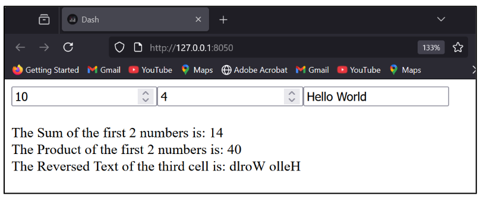
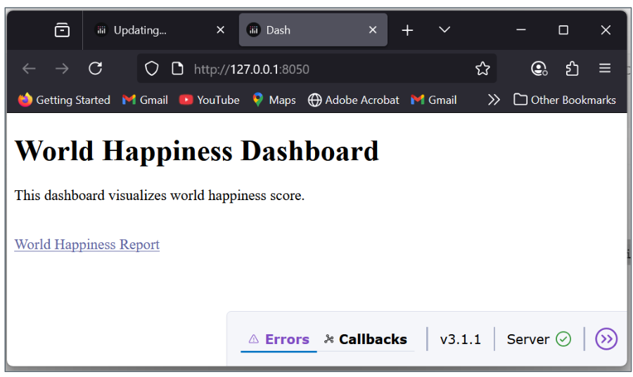
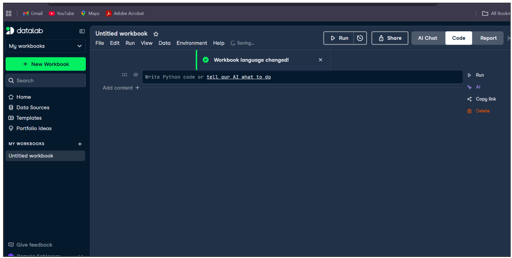

@app.callback(
Output(output_id1, output_property1), # output 1
Output(output_id2, output_property2), # output 2
Output(output_id3, output_property3), # output 3
Input(input_id1, input_property1), # input 1 → first argument
Input(input_id2, input_property2), # input 2 → second argument
Input(input_id3, input_property3) # input 3 → third argument
)
def function_name(input_value1, input_value2, input_value3):
result1 = some_operation(input_value1)
result2 = another_operation(input_value2)
result3 = yet_another_operation(input_value3)
return result1, result2, result3 # must match Output orderUsing Multiple Callbacks
This section introduces how to work with multiple inputs and outputs in Dash callbacks, enabling you to build more interactive and coordinated applications. Rather than linking each input to a single output, you will learn how to design callbacks that respond to several user inputs at once and update multiple components simultaneously. This approach is essential for creating scalable, efficient dashboards where different elements stay synchronized and react together to user behavior.
Callback
Callbacks can have multiple inputs and outputs, allowing you to update several components in response to a single input event — or to wire several independent interactions into one coordinated function. The general pattern: declare all Outputs first, then all Inputs, then write the function whose arguments correspond to the Inputs and whose return values correspond to the Outputs.

A Simple App with Three Callbacks
This example builds a minimal Dash app with three input boxes — two for numbers and one for text — and three output Divs that update in real time. The key rules:
- Each
dcc.Inputcomponent has a uniqueid('input1','input2','input3'). - Each
html.Divhas a uniqueid('output1','output2','output3'). - The
@app.callbackdecorator declares three Outputs (thechildrenproperty of each outputDiv) and three Inputs (thevalueproperty of each input box). - Whenever any input value changes, Dash calls the function and expects three return values in the same order as the declared Outputs.
from dash import Dash, html, dcc, Input, Output, callback
app = Dash()
app.layout = html.Div([
dcc.Input(id='input1', type='number', placeholder='Enter a number'),
dcc.Input(id='input2', type='number', placeholder='Enter another number'),
dcc.Input(id='input3', type='text', placeholder='Enter some text'),
html.Div(id='output1', style={'marginTop': '20px'}),
html.Div(id='output2'),
html.Div(id='output3')
])
@app.callback(
Output('output1', 'children'), # result1 → output1
Output('output2', 'children'), # result2 → output2
Output('output3', 'children'), # result3 → output3
Input('input1', 'value'), # num1 ← input1
Input('input2', 'value'), # num2 ← input2
Input('input3', 'value') # text ← input3
)Handling None Values and Computing Results
When a dcc.Input box is empty, Dash passes None as the argument value — not 0 or "". Always guard against None before doing arithmetic or string operations.
def update_outputs(num1, num2, text):
# Replace None with safe defaults before any computation
num1 = num1 or 0 # None → 0; any number stays as-is
num2 = num2 or 0
text = text or "" # None → empty string
result1 = f"Sum of the two numbers: {num1 + num2}"
result2 = f"Product of the two numbers: {num1 * num2}"
result3 = f"Reversed text: {text[::-1]}"
# text[::-1] is Python slice notation for reversing a sequence
# "hello" → "olleh"
return result1, result2, result3
if __name__ == '__main__':
app.run(debug=True)Multiple Callbacks Lab
1. In the three-callback example, what happens if the user fills in input1 and input2 but leaves input3 empty? Walk through the None guard logic and state exactly what each output will display.
Show Answer
input3 is empty, so Dash passes None as the third argument (text). The guard text = text or "" substitutes an empty string. Output 1 (result1): num1 and num2 each have values (say 5 and 3), so num1 = 5 or 0 → 5, num2 = 3 or 0 → 3. Result: "Sum of the two numbers: 8". Output 2 (result2): "Product of the two numbers: 15". Output 3 (result3): text[::-1] on an empty string "" returns "". Result: "Reversed text: " (the label appears with nothing after it). The callback completes successfully — no error — because every None was replaced before any operation was attempted.
2. The three-callback app declares all three Input components before the @app.callback decorator, not inside a separate layout function. What problem would arise if two Input components were given the same id, and how does Dash catch it?
Show Answer
Dash component id values must be unique across the entire app. If two components share the same id (e.g., two dcc.Input boxes both with id='input1'), Dash raises a DuplicateIdError at startup — before the server even starts — describing which id is duplicated. This is caught at initialization because Dash builds an internal component registry keyed by id when the layout is first set. The callback system uses these id strings to route data, so ambiguity in id would make it impossible to determine which component’s value to send to which callback argument.
The World Happiness App
Starting with a Hyperlink
html.A() is the Dash equivalent of the HTML <a> anchor tag, used to create hyperlinks.
from dash import Dash, html
app = Dash()
app.layout = html.Div([
html.H1("World Happiness Dashboard"),
html.P("This dashboard visualizes world happiness scores."),
html.Br(),
html.A(
"World Happiness Report", # visible link text
href="https://worldhappiness.report/",
target="_blank", # open in a new tab; omit to open in current tab
style={'color': '#6065a3', 'textDecoration': 'underline'}
)
])Inline Styling Reminder
Inline styling uses a Python dictionary. Two CSS rules to remember:
- CSS property names are written in camelCase in Python (
textDecoration) rather than kebab-case (text-decoration) as in CSS files. - Values are strings:
'#6065a3','underline','20px'.
Full Initial Layout
from dash import Dash, html
app = Dash()
app.layout = html.Div([
html.H1("World Happiness Dashboard"),
html.P("This dashboard visualizes world happiness scores."),
html.Br(),
html.A("World Happiness Report",
href="https://worldhappiness.report/",
target="_blank",
style={'color': '#6065a3', 'textDecoration': 'underline'})
])
if __name__ == '__main__':
app.run(debug=True, use_reloader=False)
Extending the App: Data, Layout, and Callbacks
Imports and Data Preparation
from dash import Dash, html, dcc, Input, Output
import pandas as pd
import plotly.express as px
# Load the dataset — adjust the path if needed
df = pd.read_csv('data/world_happiness.csv')
# Rename columns for clarity and consistent casing
df = df.rename(columns={
"country": "Country",
"year": "Year",
"Life Ladder": "Happiness Score" # "Life Ladder" is the raw column name in the dataset
})
df['Year'] = df['Year'].astype(int) # ensure Year is an integer for sorting and dropdown use
app = Dash(__name__)
app.title = "World Happiness Dashboard"App Layout
app.layout = html.Div(
style={'padding': '20px', 'backgroundColor': '#FAF3DD'},
children=[
html.H1("World Happiness Dashboard", style={'textAlign': 'center'}),
html.P("Explore global happiness trends by year.", style={'textAlign': 'center'}),
html.Div([
dcc.Dropdown(
id='year-dropdown',
options=[{'label': str(year), 'value': year}
for year in sorted(df['Year'].unique())],
# sorted() ensures years appear in chronological order in the dropdown
value=df['Year'].max(), # default: most recent year in the dataset
clearable=False,
style={'width': '50%'}
)
], style={'textAlign': 'center', 'marginBottom': '30px'}),
dcc.Graph(id='happiness-map'), # choropleth map — populated by callback
dcc.Graph(id='top-bottom-bar'), # bar chart — populated by callback
html.Div([
html.A("World Happiness Report Data Source",
href="https://worldhappiness.report/",
target="_blank",
style={'textAlign': 'center', 'display': 'block', 'marginTop': '20px'})
])
]
)The id values ('year-dropdown', 'happiness-map', 'top-bottom-bar') are the contract between layout and callbacks. If you change an id here, you must update it in the callback too.
The Callback
@app.callback(
[Output('happiness-map', 'figure'), # output 1: choropleth map figure
Output('top-bottom-bar', 'figure')], # output 2: bar chart figure
[Input('year-dropdown', 'value')] # trigger: whenever the selected year changes
)
def update_charts(selected_year):
# Filter the full dataset to only the selected year
filtered_df = df[df['Year'] == selected_year]filtered_df is defined inside the callback function using the selected_year input. It is not a global variable — it is created fresh each time the user selects a different year. This is the standard pattern: filter or transform the global df DataFrame inside the callback based on user inputs.
Making the Choropleth Map
A choropleth map shades geographic regions in proportion to a statistical variable — darker or more intense colors indicate higher values. It is ideal for showing spatial distribution and geographic trends at a glance.
map_fig = px.choropleth(
filtered_df,
locations="Country",
locationmode="country names", # match country names to Plotly's built-in geography
color="Happiness Score",
hover_name="Country", # show country name on hover
color_continuous_scale="viridis", # perceptually uniform color scale
title=f"Happiness Score by Country — {selected_year}"
)
# Tight margins so the map fills the card area
map_fig.update_layout(margin=dict(l=0, r=0, t=40, b=0))Filtering Top and Bottom Countries
# Combine the 10 highest and 10 lowest scorers into one DataFrame
top_bottom = pd.concat([
filtered_df.nlargest(10, 'Happiness Score'), # 10 highest scores
filtered_df.nsmallest(10, 'Happiness Score') # 10 lowest scores
])
# pd.concat stacks them vertically — result has 20 rowsBuilding the Bar Chart
bar_fig = px.bar(
top_bottom.sort_values('Happiness Score'), # sort so bars go low → high
x='Happiness Score',
y='Country',
orientation='h', # horizontal bars: countries on y-axis
color='Happiness Score',
color_continuous_scale='BrBG', # brown–white–green diverging scale
title=f"Top and Bottom 10 Countries by Happiness Score — {selected_year}"
)
bar_fig.update_layout(yaxis={'categoryorder': 'total ascending'})
# 'total ascending' ensures the chart renders bars in score order (not alphabetical)
return map_fig, bar_fig # two return values match the two declared Outputs
if __name__ == '__main__':
app.run(debug=True)Running the Server
app.run(debug=True) starts the Dash development server. With debug=True:
- The server hot-reloads automatically when you save code changes.
- Detailed error messages appear in the browser if something breaks.
The if __name__ == '__main__' guard ensures the server only starts when the script is run directly, not when it is imported as a module by another file — this is a standard Python idiom.
Using DataLab for Working with Groups
DataLab provides tools for collaborative data exploration, allowing teams to work with and analyze grouped data across shared notebooks and dashboards.

World Happiness App Lab
1. The World Happiness callback filters df inside the function using filtered_df = df[df['Year'] == selected_year]. Why is df defined at the module level (outside the callback) rather than loaded fresh on every callback call, and what risk does reading from a global DataFrame introduce in a multi-user production environment?
Show Answer
df is loaded once at startup because reading a CSV file and parsing it into a DataFrame is a relatively expensive operation — doing it on every callback call would add hundreds of milliseconds of latency to every user interaction, especially for larger datasets. Loading once and filtering inside the callback is the standard pattern: the global df is read-only (the callback never writes to it), so concurrent reads from multiple users are safe. Risk in multi-user production: if the callback ever modified the global df (e.g., df.drop(...) in place), simultaneous requests from different users could corrupt each other’s data — a race condition. The safe rule is: global DataFrames are read-only; any transformation produces a new local variable (filtered_df) that lives only for the duration of that callback invocation.
2. The choropleth map uses locationmode="country names" to match data to geographies. What would happen if a country name in the dataset did not exactly match Plotly’s built-in country name list (e.g., “United States” vs. “United States of America”), and how would you detect and fix it?
Show Answer
Plotly would silently drop any row whose Country value does not match its internal name list — the country simply would not appear on the map, with no error or warning. Detection: after rendering, visually inspect the map for missing countries you expect to see. Programmatically, compare df['Country'].unique() against Plotly’s accepted country names (available in the Plotly documentation or via import plotly.express as px; px.data.gapminder()['country'].unique()). Fix: use a dictionary to remap non-standard names before passing to px.choropleth:
name_fixes = {"United States": "United States of America", "South Korea": "Korea, South"}
df['Country'] = df['Country'].replace(name_fixes)Always apply the fix to the DataFrame once at load time (before the callback) so it does not re-run on every user interaction.
3. The bar chart uses pd.concat([filtered_df.nlargest(10, 'Happiness Score'), filtered_df.nsmallest(10, 'Happiness Score')]). What does pd.concat do here, and what would the chart look like if the year selected had fewer than 20 countries in the dataset?
Show Answer
pd.concat stacks two DataFrames vertically — it takes the 10-row “top” DataFrame and the 10-row “bottom” DataFrame and produces a single 20-row DataFrame with all rows from both. The bar chart then visualizes all 20 countries ranked by happiness score. If fewer than 20 countries exist for the selected year: nlargest(10, ...) and nsmallest(10, ...) will return however many rows are available — if only 15 countries have data, you get at most 10 from the top and 5 from the bottom (or overlapping rows if some countries appear in both). pd.concat handles this gracefully — it produces a smaller DataFrame without errors. The chart renders with fewer bars, which is correct behavior. No code change is needed to handle this edge case.
Summary and Review
Using AI
Use the following prompts with a generative AI tool to explore multiple callbacks and data visualization further.
- What is the general pattern for a Dash callback with multiple inputs and outputs? How must the function arguments and return values correspond to the declared Inputs and Outputs?
- Why must all component
idvalues be unique in a Dash app? What error occurs if two components share the sameid? - What is the
Noneguard pattern in Dash callbacks, and why does an emptydcc.Inputbox passNonerather than an empty string? - Why is a global DataFrame loaded once at module level rather than inside the callback function? What rule must you follow to keep it safe in a multi-user environment?
- What is a choropleth map, and what does
locationmode="country names"do? What happens when a country name in the data does not match Plotly’s built-in list? - What does
pd.concatdo, and how is it used to combine the top and bottom 10 countries into a single bar chart DataFrame? - What does
yaxis={'categoryorder': 'total ascending'}do to a horizontal bar chart? Why is this important for readability?
Summary
This chapter demonstrated advanced callback patterns — multiple inputs and outputs in a single callback — and built a full World Happiness data visualization dashboard.
| Topic | Key concepts |
|---|---|
| Multiple outputs pattern | Declare all Outputs, then all Inputs; return values must match Output order exactly |
| Multiple inputs | Any input change triggers the callback; arguments match Input declaration order |
None guards |
value or 0 / value or "" — protect against empty inputs passing None |
Duplicate id error |
DuplicateIdError raised at startup; all component IDs must be unique |
text[::-1] |
Python slice notation for reversing a string |
html.A() |
Dash hyperlink component; href= sets URL; target="_blank" opens new tab |
camelCase in style={} |
textDecoration not text-decoration; all values are strings |
| Global DataFrame | Load once at module level; read-only in callbacks; transformations create local copies |
filtered_df pattern |
Filter global df inside callback; never modify the global in place |
px.choropleth |
Geographic map shaded by variable; locationmode="country names" matches to geography |
pd.concat |
Stacks DataFrames vertically; used to combine top + bottom 10 countries |
nlargest / nsmallest |
Pandas methods returning top/bottom N rows by a column value |
sort_values + orientation='h' |
Horizontal bar chart; sort before plotting for visual order |
categoryorder: 'total ascending' |
Ensures bar chart renders in value order, not alphabetical |
if __name__ == '__main__' |
Standard guard; ensures app.run() only fires when script is run directly |
| DataLab | Collaborative data exploration tool for grouped data analysis across shared notebooks |
What comes next: The course summary ties all the technical and strategic threads together — from platform competition and AI ethics through data acquisition, dashboard development, and deployment — preparing you for the final project.